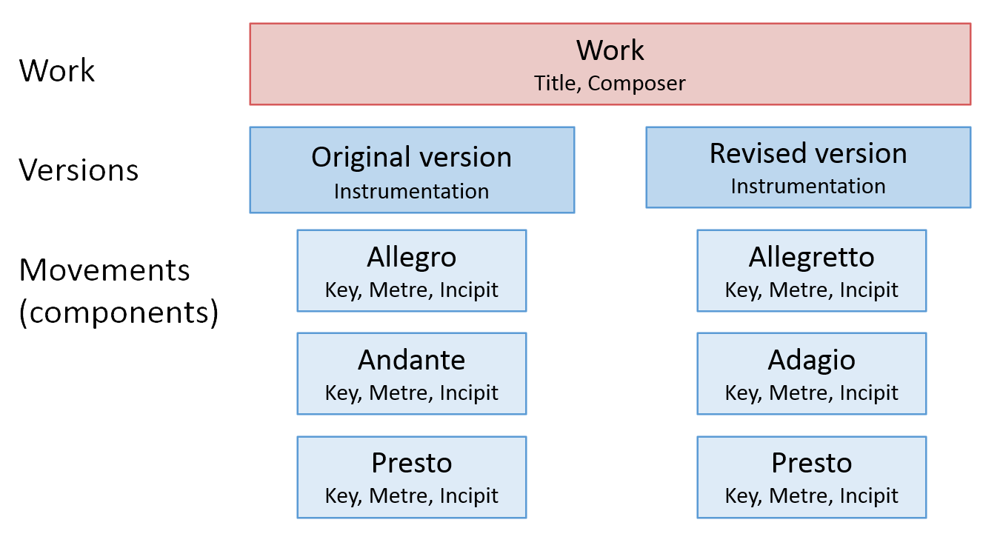
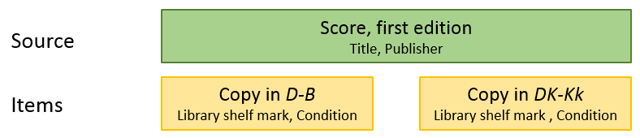
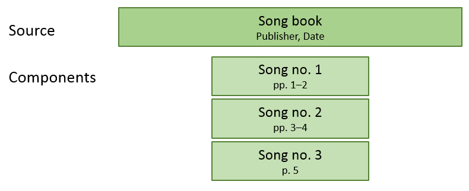
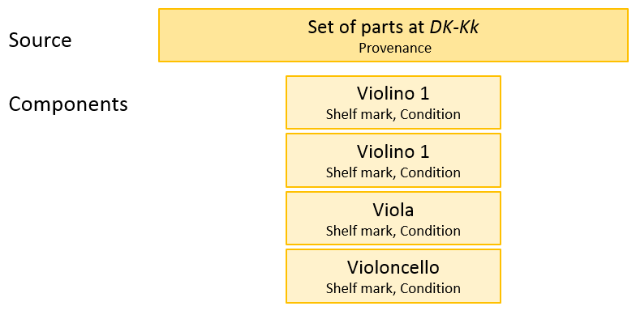

Structure and scope of MerMEId documents
This page explains the overall structure of the documents that MerMEId produces. Since MerMEId encodes all information as MEI XML, certain restrictions and structural restraints are imposed on the documents by the MEI schema, that is, the rules for the structure and content of MEI files. Even though the purpose of MerMEId is to enable musicologists and librarians to produce catalogs or other collections of musical metadata without having to know about the details of MEI, knowing about some of the concepts of MEI metadata may help understanding the software and knowing which information goes where.
MEI documents basically have two main sections: metadata and the encoding of the actual music. MerMEId simply ignores the encoded music section and only focuses on the metadata part – the so-called header (incipits are an exception: They are located in the header and thus the only music encodings within the scope of MerMEId).
Main levels of description
MerMEId allows the modelling of rather complex sets of metadata describing not only works and their sources, but also, for instance, various versions of a work, the relations between works, and the individual components of a source. Information about a work and its sources is organized into four distinct levels of abstraction: Work, version, source, and item. Users familiar with the 'Functional Requirements for Bibliographic Records' (FRBR) defined by the International Federation of Library Associations and Institutions (IFLA) will recognize these four levels as corresponding to the work, expression, manifestation and item entities of FRBR.

Apart from information about the musical work and its sources, MerMEId can also add technical and administrative metadata as well as bibliographical references to your files. An overview of this type of information is given at the end of this page.
The following description outlines the contents of MEI metadata documents created with MerMEId, explains the main terms and where to input/edit the information.
The structure of the work: Work, versions, and movements
The illustration gives some typical examples of information entered at work, version, and movement level, respectively.
Work: At work level, only information regarding the musical work in all its forms is edited. This includes the name of the composer, a uniform title, and the work's number in a thematic catalogue. The main key, in contrast, is NOT an information at work level since a transposition of the work would normally still be regarded as a version of the same work, just in a different key.
Work-level information is entered mainly at the Work tab. Historical information however, such as the date and place of composition is edited together with other historical facts at the History tab.
Versions: Any information about the music itself such as
key and instrumentation is entered at version level to allow the description of
versions of the same work in different keys or instrumentations, for instance.
Versions may have specific titles like 'Revised version (1864)' or 'Version for
string quartet' but a version title input field is available only when more than one
version is created (add versions by clicking the  button next to the label
'Version').
button next to the label
'Version').
With multi-movement works, some of this information such as key, metre, and tempo should obviously be entered at movement level (see below). Version information is entered mainly at the Music tab, except for historic information which is edited together with other historical facts at the History tab.
Please note that version-specific history is available only when more than one version is created.
See also the tutorial: Works having multiple version
Movements: The movements of a work are encoded as components of a version. They are defined at the bottom of each 'version' block at the Music tab. MerMEId calls them 'components' rather than movements to emphasize that they can represent subdivisions at various levels. MerMEId allows up to three levels of components to be created in a tree-structured manner – sufficient to describe, for instance, the division of a stage work into acts, scenes, and numbers.

Once components are created and saved their details can be edited. These include roughly the same information as for versions, that is, key, tempo, metre, and instrumentation (which must be either the same as or a subset of the overall instrumentation defined at version level).
Organizing source material: Sources and items
It is important to notice that 'Source' in this context differs from what is perceived as a source in, for instance, a critical edition. In MerMEId, 'source' is the equivalent of what FRBR calls a 'manifestation', as opposed to a specific copy ('item') of that source.
A MerMEId 'source' is not a single physical object but a description of all objects carrying the same information in the same format: for instance, the printed first edition of a score is considered a source. The second edition is another source. This is probably the most difficult concept to comprehend when working with MerMEId (or, in general, the FRBR-enhanced variant of MEI).
The terminological confusion arises from the fact that the original, simpler version of the MEI schema – without the FRBR enhancement – does not distinguish 'item' and 'source' levels but only has 'source'. In simple MEI, 'source' can refer to either a printed edition (a print run) or a specific copy of that edition. MerMEId is more specific. By adding the 'item' level, the meaning of 'source' is restricted to general features shared (at least originally) by all copies of that source. The characteristics of individual copies are described at item level instead.
Below is an illustration of a printed first edition (source) with two exemplars (items) located in Berlin and Copenhagen, respectivey.
As a consequence, library shelf marks cannot be entered at source level but only at item level since shelf marks can only refer to individual copies (exemplars). Conversely, the name of the publisher cannot be specified at item level because this information must apply to all copies of that particular edition and therefore should be entered at source level.
The distinction between sources and items may seem particularly confusing when describing manuscript sources which obviously are unique. However, the same encoding pratice should be applied to manuscripts and prints to ensure the same functionality; thinking of manuscripts as printed sources with only one surviving copy may be helpful when deciding where to enter what information.
To minimize redundancy no information given at source level should be repeated at item level. As a rule of thumb, we recommend putting information at the highest possible level. For instance, the title page of a manuscript should be cited at source level rather than at item level. The description of other features like paper and watermark are more problematic and may depend on your project's guidelines. Some projects may consider photocopies, digitizations or microfilms of a manuscript to be items of the same source; others may regard them as distinct sources (FRBR "manifestations") or disregard them entirely. General recommendations are yet to be discussed.
Sources and items are created at the Sources tab. If the work has more than one version, sources can be organized according to the versions they embody (see also the tutorial: Works having multiple version).
Source components
Both sources and items can have components to be described indivdually. For example, a set of orchestral parts can be defined as a source with some shared features (such as plate number the publisher's name), but a description of each of the parts may be provided as well by creating source components. Components are added at the bottom of the source details editor page.

Source components can also describe the contents of a source containing multiple works or movements:
Item components
At item level, components are useful for describing the physical appearance or condition of the individual parts of a set, or the individual fascicles of a compound source. Item components also allow the description of a set of parts in which each part has its own shelf mark, or where parts have accidentally been scattered over a number of locations.
Sometimes it will be sufficient to describe components at either source or item level (for example, if only a single copy is known or if other copies are not considered); sometimes you will want to use components at both levels – or neither.
As source components can also have items, MerMEId can even describe complex situations where surviving item components (such as part books) scattered across a number of locations cannot be grouped into well-defined sets (items) but are better described as individual items:

Historical information
Details about a work's history – its creation, reception, performances etc. – can be entered at the History tab. If more than one version of the work is defined (by adding alternative versions at the Music tab), historical information can be given at either work or version level. See also the tutorial: Works having multiple version
Bibliographic references
The Bibliography tab allows the user to add a list of other material related to the musical work but not regarded as sources to the work itself. This may include the composer's or others' letters, diary entries, essays, and other (historical, biographical, analytic etc.) literature.
References can be organized in any number of lists, each with a custom heading - for instance, 'Letters', 'Documents', or 'Bibliography'.
Technical and administrative metadata
In addition to the metadata about the musical work and sources, also information about the file itself, its creators and the context in which it was created - somewhat like a book's imprint - can be encoded with MerMEId.
These metadata include information about the persons, institutions, and software involved in the creation of the file. Also a project description and a note aboout use restrictions - such as copyright or license information - may be given.
Technical/adminsitrative metadata are edited at the File tab.
File metadata also include the name of the 'file collection' (usually the short name of the catalogue or project) which MerMEId uses to organize files into different catalogues/projects.